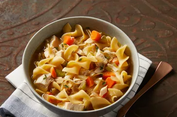

Chicken Noodle Soup

Description
This homemade chicken noodle soup is soul-warming and deliciously simple — just chicken and noodles. What makes it so good is the homemade roasted chicken stock.
Ingredients
- 1 tablespoon butter
- 1/2 cup diced carrot
- 1/2 cup diced onion
- 1/2 cup diced celery
- 1/4 teaspoon fresh thyme leaves
- 1 pinch salt
- 2 tablespoons melted chicken fat
- 2 quarts roasted chicken broth (see footnote for recipe link)
- 4 ounces uncooked wide egg noodles
- 2 cooked boneless chicken breast halves, cubed
- 1 pinch cayenne pepper (Optional)
- salt and ground black pepper to taste
Steps
- Melt butter in a large soup pot over medium heat. Stir in carrot, onion, celery, thyme, and salt. Add chicken fat; cook and stir until onions turn soft and translucent, 5 to 6 minutes.
- Stir in roasted chicken broth and bring to a boil. Season with salt, if necessary.
- Stir in egg noodles; cook until tender, about 5 minutes.
- Add cooked chicken breast meat; simmer until heated through, about 5 minutes. Season with cayenne pepper, salt, and black pepper.
- Serve hot and enjoy!